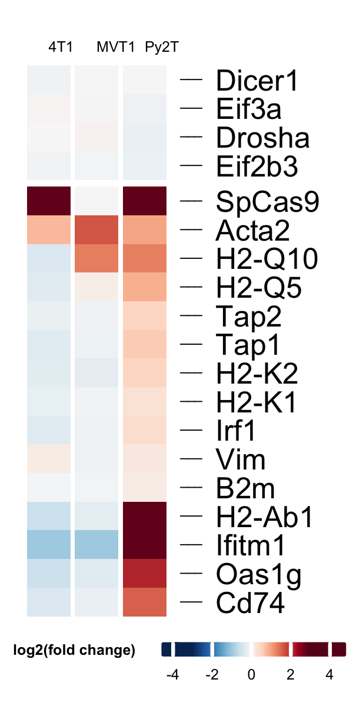
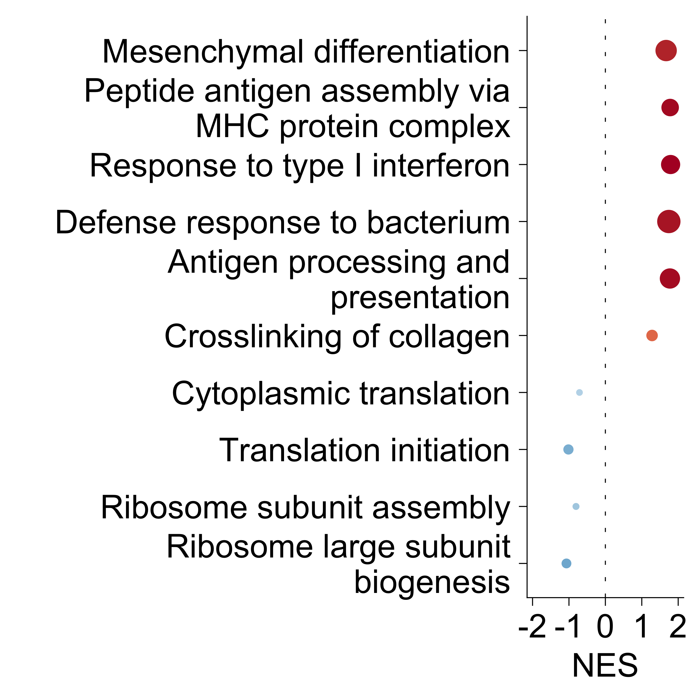
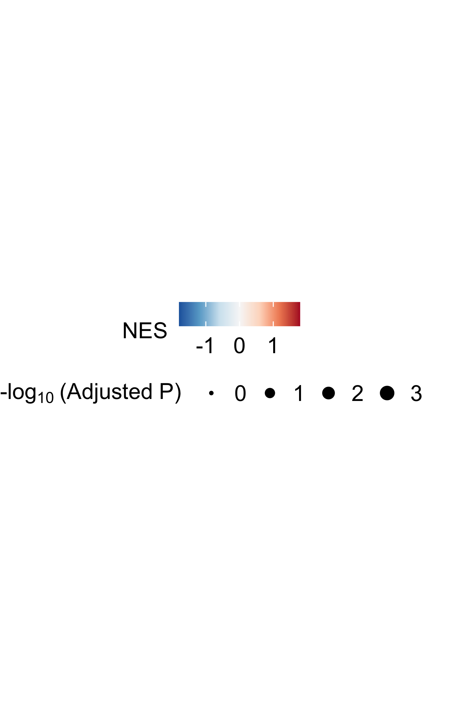

Last updated: 2025-07-01
Checks: 7 0
Knit directory: saini-stealTHY/
This reproducible R Markdown analysis was created with workflowr (version 1.7.1). The Checks tab describes the reproducibility checks that were applied when the results were created. The Past versions tab lists the development history.
Great! Since the R Markdown file has been committed to the Git repository, you know the exact version of the code that produced these results.
Great job! The global environment was empty. Objects defined in the global environment can affect the analysis in your R Markdown file in unknown ways. For reproduciblity it’s best to always run the code in an empty environment.
The command set.seed(20240517) was run prior to running
the code in the R Markdown file. Setting a seed ensures that any results
that rely on randomness, e.g. subsampling or permutations, are
reproducible.
Great job! Recording the operating system, R version, and package versions is critical for reproducibility.
Nice! There were no cached chunks for this analysis, so you can be confident that you successfully produced the results during this run.
Great job! Using relative paths to the files within your workflowr project makes it easier to run your code on other machines.
Great! You are using Git for version control. Tracking code development and connecting the code version to the results is critical for reproducibility.
The results in this page were generated with repository version bc402e6. See the Past versions tab to see a history of the changes made to the R Markdown and HTML files.
Note that you need to be careful to ensure that all relevant files for
the analysis have been committed to Git prior to generating the results
(you can use wflow_publish or
wflow_git_commit). workflowr only checks the R Markdown
file, but you know if there are other scripts or data files that it
depends on. Below is the status of the Git repository when the results
were generated:
Ignored files:
Ignored: .DS_Store
Ignored: .Rhistory
Ignored: .Rproj.user/
Ignored: analysis/.DS_Store
Ignored: code/.DS_Store
Ignored: code/raw_data_processing/rnaseq/p27851_o32062/pipelines/
Ignored: configuration/.DS_Store
Ignored: data/.DS_Store
Ignored: data/crispr/
Ignored: data/resources/
Ignored: data/rnaseq/
Ignored: output/.DS_Store
Ignored: output/clinical/
Ignored: output/crispr/
Ignored: output/rnaseq/
Untracked files:
Untracked: analysis/crispr-hsapiens_2180_sgRNA_r1.Rmd
Untracked: analysis/crispr-mm_2215_sgRNA-CMT167-LLC1-CT26.Rmd
Untracked: analysis/crispr-mm_2215_sgRNA-clonality_r1.Rmd
Untracked: analysis/crispr-mm_2215_sgRNA-r2oD_r1.Rmd
Untracked: analysis/crispr-muller-mm_2215_sgRNA.Rmd
Untracked: analysis/templates/
Untracked: code/R-functions/subchunkify.R
Unstaged changes:
Modified: .gitignore
Modified: analysis/crispr-hsapiens_2180_sgRNA.Rmd
Modified: analysis/crispr-mm_2215_sgRNA-StealTHY.Rmd
Modified: analysis/crispr-mm_2215_sgRNA-clonality.Rmd
Modified: analysis/crispr-mm_2215_sgRNA-r2oC.Rmd
Modified: code/R-functions/gse_report.r
Modified: configuration/rmarkdown/ggplot_theme.R
Modified: update_workflowr.R
Note that any generated files, e.g. HTML, png, CSS, etc., are not included in this status report because it is ok for generated content to have uncommitted changes.
These are the previous versions of the repository in which changes were
made to the R Markdown
(analysis/rnaseq-tumor-facs-cancer.Rmd) and HTML
(docs/rnaseq-tumor-facs-cancer.html) files. If you’ve
configured a remote Git repository (see ?wflow_git_remote),
click on the hyperlinks in the table below to view the files as they
were in that past version.
| File | Version | Author | Date | Message |
|---|---|---|---|---|
| Rmd | bc402e6 | Francesc Castro-Giner | 2025-07-01 | uodate rnaseq analysis |
| Rmd | 628f8ec | Francesc Castro-Giner | 2024-05-24 | added F4 |
| Rmd | abf695c | Francesc Castro-Giner | 2024-05-23 | done f2 anf f3 |
Setup environment
knitr::opts_chunk$set(results='asis', echo=TRUE, message=FALSE, warning=FALSE, error=FALSE, fig.align = 'center', fig.width = 3.5, fig.asp = 0.618, dpi = 600, dev = c("png", "pdf"), fig.showtext = FALSE, engine.opts = list(bash = "-l"))
options(stringsAsFactors = FALSE)
use_seed <- 1100101
set.seed(use_seed)
dir.create(params$output_dir, recursive = TRUE, showWarnings = FALSE)Load packages
library(tidyverse)
library(knitr)
library(foreach)
library(magrittr)
library(DT)
library(kableExtra)
library(SummarizedExperiment)
library(edgeR)
library(scuttle)
library(ComplexHeatmap)
library(circlize)
library(RColorBrewer)
library(org.Mm.eg.db)Load ggplot theme
source("./configuration/rmarkdown/ggplot_theme.R")Load ggplot theme
source("./configuration/rmarkdown/color_palettes.R")Load custom functions
source('./code/R-functions/dge_wrappers.r')
source('./code/R-functions/dge_report.r')
source('./code/R-functions/gse_omnibus.r')
source('./code/R-functions/gse_report.r')
clean_msigdb_names <- function(x) x %>% gsub('REACTOME_', '', .) %>% gsub('WP_', '', .) %>% gsub('BIOCARTA_', '', .) %>% gsub('KEGG_', '', .) %>% gsub('PID_', '', .) %>% gsub('GOBP_', '', .) %>% gsub('_', ' ', .)Load MSigDB files
gmt_files_symbols <- list(
msigdb.m2.cp.m5.bp.custom.signatures = './data/resources/custom_signatures/msigdb_m2_cp-m5_bp-signatures_cancer_cells.gmt'
)Clean files generated in previous runs
rmd_file <- current_input()
if(!is.null(rmd_file)) {
figures_dir <- file.path('./docs/figure',rmd_file)
if(dir.exists(figures_dir)) {
unlink(file.path(figures_dir, "*"))
}
}Load Ensembl biomaRt mmusculus data
if(file.exists('./data/resources/ensembl_biomart/mart_mmu_genes.rds')){
ensembl_mart_mmu_genes <- readRDS('./data/resources/ensembl_biomart/mart_mmu_genes.rds')
} else {
# httr::set_config(httr::config(ssl_verifypeer = FALSE))
ensembl_mart_mmu_genes <- biomaRt::useEnsembl(
biomart="genes", dataset="mmusculus_gene_ensembl",
mirror = "useast"
)
saveRDS(
ensembl_mart_mmu_genes,
file = './data/resources/ensembl_biomart/mart_mmu_genes.rds'
)
}Load data
se <- readRDS(file.path(params$data_dir, params$se_file))
rowData(se[rownames(se) == 'CAS9',])$gene_name <- 'SpCas9'
rownames(se)[rownames(se) == 'CAS9'] <- 'SpCas9'
se <- se[,se$cell_type == 'tumor']
se <- se[,se$sample_type == 'primary_tumor']Modify sample annotation
colData(se) %<>% data.frame %>%
mutate(
condition = NA,
condition = ifelse(grepl('Thy1', sample_alias), 'Thy1', condition),
condition = ifelse(grepl('Cas9', sample_alias), 'Cas9', condition)
) %>%
DataFrameFiltering out low-abundance features. Keeping those features with at least 1 count in at least 30% of samples of the smallest group.
use_rows <- filterByExpr(se, group=paste(se$donor, se$condition), min.count = params$min_counts, min.prop = params$min_present_prop)
se <- se[use_rows,]
# Update PerCellQCMetrics
colData(se) <- colData(se) %>% data.frame %>% dplyr::select(-(sum:subsets_Ribo_percent)) %>% DataFrame
se <- addPerCellQCMetrics(
se,
subsets=list(
Mito=which(rowData(se)$is.mito),
Ribo=which(rowData(se)$is.ribo)
),
percent.top = c(1,5,10,20, 50, 100),
threshold = 3
)TMM normalization
norm_method <- "TMM"
exprs_mat_for_norm <- assay(se, 'counts')
norm_factors <- calcNormFactors(exprs_mat_for_norm, method = norm_method)
lib_size <- colSums(exprs_mat_for_norm)/10^6
se$size_factor <- (norm_factors * lib_size)
se <- logNormCounts(se, size.factors =se$size_factor)
se <- logNormCounts(se, size.factors =se$size_factor, log = FALSE)Configure comparisons and arguments for differential expression
x <- colData(se) %>% data.frame
comp_list <- list(
`dCas9_Thy1--over--Thy1` = list(
`dCas9-Thy1` = x %>%
filter(condition == 'Cas9' & treatment == 'no') %>%
pull(sample_alias) %>%
sort,
Thy1 = x %>%
filter(condition == 'Thy1') %>%
pull(sample_alias) %>%
sort,
batch = 'donor'
)
)Run differential expression analysis using EdgeR QLF for multidonor-comparisons
use_comp <- comp_list[[1]]
dge_list <- foreach(use_comp = comp_list) %do%{
se_cols <- se$sample_alias %in% unlist(use_comp)
use_se <- se[,se_cols]
use_se$group <- ifelse(
use_se$sample_alias %in% use_comp[[1]],
names(use_comp)[1],
names(use_comp)[2]
)
if(is.null(use_comp$batch)) {
dge <- edgeR_dge(
use_se,
# Design configuration for differential expression
group_var = 'group',
group_sample = names(use_comp)[1],
group_ref = names(use_comp)[2],
design_formula = "~ group",
coef = 'last',
# Conversion from SingleCellExperiment/Summarized Experiment to DGEList
assay_to_DGEList = 'counts',
assay_to_row_filter = "counts",
# Feature filtering parameters
use_filterByExpr = TRUE,
min_counts = params$min_counts,
min_present_prop = params$min_present_prop,
# EdgeR workflow configuration
run_calcNormFactors = 'TMM',
estimateDisp_robust = TRUE,
estimateDisp_trend.method = "locfit",
glm_approach = "QLF",
# Output configuration
adjust_method = 'BH'
)
} else if(use_comp$batch == 'donor') {
dge <- edgeR_dge(
use_se,
# Design configuration for differential expression
group_var = 'group',
group_sample = names(use_comp)[1],
group_ref = names(use_comp)[2],
batch_vars = 'donor',
design_formula = "~ donor + group",
coef = 'last',
# Conversion from SingleCellExperiment/Summarized Experiment to DGEList
assay_to_DGEList = 'counts',
assay_to_row_filter = "counts",
# Feature filtering parameters
use_filterByExpr = TRUE,
min_counts = params$min_counts,
min_present_prop = params$min_present_prop,
# EdgeR workflow configuration
run_calcNormFactors = 'TMM',
estimateDisp_robust = TRUE,
estimateDisp_trend.method = "locfit",
glm_approach = "QLF",
# Output configuration
adjust_method = 'BH'
)
}
# Add gene description
gene_desc <- biomaRt::getBM(attributes=c('external_gene_name','description'),
filters = 'external_gene_name',
values = dge$results$gene_name, mart =ensembl_mart_mmu_genes) %>%
dplyr::rename('gene_name' = 'external_gene_name') %>%
unique
use_res <- dge$results %>% left_join(., gene_desc)
dge$results <- use_res %>%
filter(!duplicated(feature)) %>%
mutate(rownames = feature) %>%
column_to_rownames('rownames')
return(dge)
}
names(dge_list) <- names(comp_list)
detach("package:biomaRt", unload=TRUE)
# Save objects
saveRDS(dge_list, file = file.path(params$output_dir, 'dge-edgeR_QLF.rds'))dge_list <- readRDS(file.path(params$output_dir, 'dge-edgeR_QLF.rds'))
dge <- dge_list[[1]]
gse_list <- list()
gse_list <- foreach(dge = dge_list) %do%{
gse_res <- gse_omnibus(
feature_names = dge$results$gene_name,
p = dge$results$FDR,
fc = dge$results$logFC,
fc_thrs = 0.5,
gmt_files = gmt_files_symbols,
run_GSEA = TRUE,
args_gse = list(minGSSize = 10, maxGSSize = 500, pvalueCutoff = 1)
)
return(gse_res)
}
names(gse_list) <- names(dge_list)
# Save objects
saveRDS(gse_list, file = file.path(params$output_dir,'gse_omnibus-edgeR_QLF.rds'))dge_list <- readRDS(file.path(params$output_dir, 'dge-edgeR_QLF.rds'))
gse_list <- readRDS(file.path(params$output_dir, 'gse_omnibus-edgeR_QLF.rds'))Showing selected genes and genes with a FDR < 0.05 and a absolute log2 fold-change > 1. To calculate the fold-change by model, log normalized counts were aggregated at model and condition using their average (function aggregateAcrossCells). Then the aggregated expression in dCas9-Thy1 was divided by the aggregated expression in Thy1.
# Heatmap parameters
p_thrs <- 0.05
lfc_thrs <- 1
# topn <- 50
max_color_range <- 3 # put the color range to -3 to 3
# Select comparison
i <- "dCas9_Thy1--over--Thy1"
use_comp <- comp_list[[i]]
# Select genes to highlight
use_labels <- c("Acta2","Vim","H2-Ab1","H2-K1","H2-K2","Cd74","B2m",
"Tap1","Tap2","SpCas9","H2-Q5","H2-Q10","Ifitm1","Oas1g",
"Irf1","Eif3a","Eif2b3","Dicer1","Drosha")
# Extract samples from comparisons
use_samples <- unlist(use_comp[1:2])
# Add dge_groups annotation
colData(se) <- colData(se) %>% data.frame %>%
mutate(
condition_new = ifelse(sample_alias %in% use_comp[[1]],
names(use_comp)[1],
NA),
condition_new = ifelse(sample_alias %in% use_comp[[2]],
names(use_comp)[2],
condition_new),
condition_new = factor(condition_new, levels = names(use_comp)[2:1]),
condition_num = as.numeric(condition_new)
) %>% DataFrame
# Average SE by condition
group_id <- paste(se$donor, se$condition_new)
use_se <- scuttle::aggregateAcrossCells(
se,
statistics = "mean",
subset.col = use_samples,
ids = group_id,
use.assay.type = 'logcounts'
)
# Arrange samples by condition
use_annot <- colData(use_se) %>% data.frame %>%
arrange(condition_num, donor)
use_samples <- use_annot$ids
# Extract DGE results
use_dge <- dge_list[[i]]$results %>%
mutate(
gene_name = ifelse(feature == 'CAS9', 'CAS9', gene_name),
significant = (FDR < p_thrs & abs(logFC) > lfc_thrs),
selected = ifelse(gene_name %in% use_labels, TRUE, significant),
direction = ifelse(logFC > 0, 'Up', 'Down')
) %>%
filter(selected) %>%
arrange(FDR)
# Extract matrix of expression
use_se <- use_se[rownames(use_dge), use_samples]
mat <- assay(use_se, 'logcounts')
rownames(mat) <- use_dge$gene_name
# Calculate fold-change by donor
donor_levels <- unique(use_annot$donor)
fcmat <- foreach(use_donor = donor_levels, .combine = cbind) %do% {
s1 <- use_annot %>%
filter(donor == use_donor) %>%
filter(condition_new == names(use_comp)[[1]]) %>%
pull(ids)
s2 <- use_annot %>%
filter(donor == use_donor) %>%
filter(condition_new == names(use_comp)[[2]]) %>%
pull(ids)
return(mat[,s1]/mat[,s2])
}
colnames(fcmat) <- donor_levels
fcmat[is.na(fcmat)] <- 1
fcmat[fcmat == Inf] <- max(fcmat[fcmat < Inf])
fcmat[fcmat == 0] <- min(fcmat[fcmat > 0])
fcmat <- log2(fcmat)
# Row annotation for selected labels
row_annot_selected_labels <- rowAnnotation(
selected = anno_mark(
at = match(use_labels, rownames(fcmat)),
labels =use_labels,
labels_gp = gpar(fontsize = 6),
lines_gp = gpar(lwd = 0.3),
padding = unit(0.01, "inches"),
link_width = unit(0.1, "inches")
)
)
# Heatmap color
zmax <- fcmat %>% abs %>% max
if(!is.null(max_color_range))
zmax <- max_color_range
col_fun <- colorRamp2(
seq(-zmax, zmax, length.out = 11),
rev(brewer.pal(11, "RdBu"))
)
# Generate Heatmap
htz <- Heatmap(
fcmat,
name= 'log2(fold change)',
col = col_fun,
show_row_names = FALSE,
show_column_names = TRUE,
# row_names_gp = gpar(fontsize = 8),
column_names_gp = gpar(fontsize = 3),
column_names_rot = 0,
column_names_side = 'top',
cluster_column_slices = FALSE,
# top_annotation = column_ha,
column_split = colnames(fcmat),
column_gap = unit(0.039/3, "inches"),
column_title = NULL,
cluster_row_slices = FALSE,
right_annotation = row_annot_selected_labels,
row_split = use_dge$direction,
row_gap = unit(0.039/2, "inches"),
# left_annotation = row_annot_left,
row_title = NULL,
cluster_columns = FALSE,
show_row_dend = FALSE,
# show_heatmap_legend = FALSE,
heatmap_legend_param = list(
direction = "horizontal",
title_gp = gpar(fontsize = 3, fontface = "bold"),
labels_gp = gpar(fontsize = 3),
legend_width = unit(0.5, "inches"),
grid_height = unit(0.03, "inches"),
title_position = 'lefttop'
)
)
draw(htz, heatmap_legend_side = "bottom")
cat("\n\n")i <- "dCas9_Thy1--over--Thy1"
x <- gse_list[[i]]$GSEA[["msigdb.m2.cp.m5.bp.custom.signatures"]]@result
use_sets <- c(
`Mesenchymal differentiation` = 'GOBP_MESENCHYMAL_CELL_DIFFERENTIATION',
`Peptide antigen assembly via MHC protein complex` = 'GOBP_PEPTIDE_ANTIGEN_ASSEMBLY_WITH_MHC_PROTEIN_COMPLEX',
`Response to type I interferon` = 'GOBP_RESPONSE_TO_INTERFERON_BETA',
`Defense response to bacterium` = 'GOBP_DEFENSE_RESPONSE_TO_BACTERIUM',
`Antigen processing and presentation` = 'GOBP_ANTIGEN_PROCESSING_AND_PRESENTATION',
`Crosslinking of collagen` = 'REACTOME_CROSSLINKING_OF_COLLAGEN_FIBRILS',
`Cytoplasmic translation` = 'GOBP_CYTOPLASMIC_TRANSLATIONAL_INITIATION',
`Translation initiation` = 'REACTOME_EUKARYOTIC_TRANSLATION_INITIATION',
`Ribosome subunit assembly` = 'GOBP_RIBOSOMAL_LARGE_SUBUNIT_ASSEMBLY',
`Ribosome large subunit biogenesis` = 'GOBP_RIBOSOME_BIOGENESIS'
)
use_gse_res <- gse_list[[i]]$GSEA[["msigdb.m2.cp.m5.bp.custom.signatures"]]@result[use_sets,]
use_gse_res$ID <- factor(use_gse_res$ID, levels = rev(use_sets))
levels(use_gse_res$ID) <- rev(names(use_sets))
label_func <- default_labeller(30)
x_max <- range(use_gse_res$NES) %>% abs %>% max
size_max <- max(-log10(use_gse_res$p.adjust))
res <- use_gse_res %>%
ggplot(aes(NES, ID, color = NES, size = -log10(p.adjust))) +
geom_point() +
geom_vline(xintercept = 0, linetype = 'dotted', linewidth = one_pt/4) +
scale_y_discrete(labels = label_func) +
scale_x_continuous(
expand = expansion(mult = c(.1, .1)),
limits = c(-x_max, x_max)
)+
scale_size(range = c(0.1, 2),
limits = c(0,size_max)) +
scale_color_distiller(
palette = "RdBu",
limits = c(-x_max, x_max)
) +
labs(
x = 'NES',
y = '',
size = bquote("-log"[10] ~ .(paste0("(", 'Adjusted P', ")"))),
color = 'NES'
) +
theme(
strip.background = element_blank(),
axis.line = element_line(linewidth = one_pt/4, color = 'black'),
axis.ticks = element_line(linewidth = one_pt/4, color = 'black'),
axis.text = element_text(size=8),
axis.title = element_text(size = 8),
legend.title = element_text(size=8),
legend.text = element_text(size=8),
legend.position="bottom",
legend.box = 'vertical'
# legend.key.size = unit(0.2, 'inches'),
# legend.key.width = unit(0.05, 'inches'),
# legend.key.height = unit(0.5, 'inches')
)
res_legend <- get_legend(res)
print(res + theme(legend.position = 'none'))
cat("\n\n")plot_grid(res_legend, ncol = 1, nrow = 1)
cat("\n\n")
sessionInfo()R version 4.4.3 (2025-02-28) Platform: aarch64-apple-darwin20 Running under: macOS Sequoia 15.5
Matrix products: default BLAS: /Library/Frameworks/R.framework/Versions/4.4-arm64/Resources/lib/libRblas.0.dylib LAPACK: /Library/Frameworks/R.framework/Versions/4.4-arm64/Resources/lib/libRlapack.dylib; LAPACK version 3.12.0
locale: [1] en_US.UTF-8/en_US.UTF-8/en_US.UTF-8/C/en_US.UTF-8/en_US.UTF-8
time zone: Europe/Zurich tzcode source: internal
attached base packages: [1] grid stats4 stats graphics grDevices utils datasets [8] methods base
other attached packages: [1] cowplot_1.1.3.9000
org.Mm.eg.db_3.20.0
[3] AnnotationDbi_1.68.0 RColorBrewer_1.1-3
[5] circlize_0.4.16 ComplexHeatmap_2.22.0
[7] scuttle_1.16.0 SingleCellExperiment_1.28.1 [9] edgeR_4.4.2
limma_3.62.2
[11] SummarizedExperiment_1.36.0 Biobase_2.66.0
[13] GenomicRanges_1.58.0 GenomeInfoDb_1.42.3
[15] IRanges_2.40.1 S4Vectors_0.44.0
[17] BiocGenerics_0.52.0 MatrixGenerics_1.18.1
[19] matrixStats_1.5.0 kableExtra_1.4.0
[21] DT_0.33 magrittr_2.0.3
[23] foreach_1.5.2 knitr_1.50
[25] lubridate_1.9.4 forcats_1.0.0
[27] stringr_1.5.1 dplyr_1.1.4
[29] purrr_1.0.4 readr_2.1.5
[31] tidyr_1.3.1 tibble_3.2.1
[33] ggplot2_3.5.2 tidyverse_2.0.0
[35] workflowr_1.7.1
loaded via a namespace (and not attached): [1] DBI_1.2.3 rlang_1.1.6
clue_0.3-66
[4] GetoptLong_1.0.5 git2r_0.36.2 RSQLite_2.3.11
[7] compiler_4.4.3 getPass_0.2-4 png_0.1-8
[10] systemfonts_1.2.3 callr_3.7.6 vctrs_0.6.5
[13] shape_1.4.6.1 pkgconfig_2.0.3 crayon_1.5.3
[16] fastmap_1.2.0 magick_2.8.6 XVector_0.46.0
[19] labeling_0.4.3 promises_1.3.2 rmarkdown_2.29
[22] tzdb_0.5.0 UCSC.utils_1.2.0 ps_1.9.1
[25] bit_4.6.0 xfun_0.52 zlibbioc_1.52.0
[28] cachem_1.1.0 beachmat_2.22.0 jsonlite_2.0.0
[31] blob_1.2.4 later_1.4.2 DelayedArray_0.32.0
[34] BiocParallel_1.40.2 cluster_2.1.8.1 parallel_4.4.3
[37] R6_2.6.1 bslib_0.9.0 stringi_1.8.7
[40] jquerylib_0.1.4 Rcpp_1.0.14 iterators_1.0.14
[43] httpuv_1.6.16 Matrix_1.7-3 timechange_0.3.0
[46] tidyselect_1.2.1 rstudioapi_0.17.1 dichromat_2.0-0.1
[49] abind_1.4-8 yaml_2.3.10 doParallel_1.0.17
[52] codetools_0.2-20 processx_3.8.6 lattice_0.22-7
[55] KEGGREST_1.46.0 withr_3.0.2 evaluate_1.0.3
[58] xml2_1.3.8 Biostrings_2.74.1 pillar_1.10.2
[61] whisker_0.4.1 generics_0.1.4 rprojroot_2.0.4
[64] hms_1.1.3 scales_1.4.0 glue_1.8.0
[67] tools_4.4.3 locfit_1.5-9.12 fs_1.6.6
[70] Cairo_1.6-2 colorspace_2.1-1 GenomeInfoDbData_1.2.13 [73] cli_3.6.5
textshaping_1.0.1 S4Arrays_1.6.0
[76] viridisLite_0.4.2 svglite_2.2.1 gtable_0.3.6
[79] sass_0.4.10 digest_0.6.37 SparseArray_1.6.2
[82] rjson_0.2.23 htmlwidgets_1.6.4 farver_2.1.2
[85] memoise_2.0.1 htmltools_0.5.8.1 lifecycle_1.0.4
[88] httr_1.4.7 GlobalOptions_0.1.2 statmod_1.5.0
[91] bit64_4.6.0-1